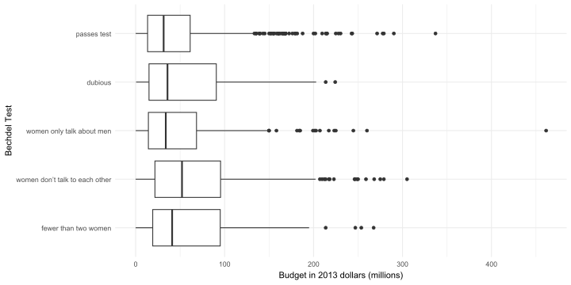

Rows: 1,794
Columns: 8
$ year <int> 2013, 2013, 2013, 2013, 2013, 2013, 2012, 2012, 2012, 20…
$ decade <chr> "2000-2013", "2000-2013", "2000-2013", "2000-2013", "200…
$ title <chr> "Cloudy with a Chance of Meatballs 2", "Gravity", "Jack …
$ binary <chr> "FAIL", "FAIL", "FAIL", "FAIL", "FAIL", "FAIL", "FAIL", …
$ bechdel_test <fct> fewer than two women, fewer than two women, fewer than t…
$ budget_2013 <dbl> 78.000000, 110.000000, 195.000000, 30.000000, 19.200000,…
$ domgross_2013 <dbl> 119.640264, 271.814796, 65.187603, 19.316646, NA, 2.3225…
$ intgross_2013 <dbl> 271.725448, 708.714796, 197.387603, 62.616646, NA, 22.59…Analítica de los Negocios - Parcial I
Antes de empezar a resolver el parcial, lea todas las preguntas.
Nadie debería tener abierto el correo luego de 5 minutos a menos que sea para enviar el parcial con todas las respuestas. El uso de ChatGPT (o cualquier otra plataforma de IA) no está permitido.
Formato de Entrega:
Me envían el R Script al correo con el formato usual:
nombre_apellido.R.Antes de enviar el archivo, asegúrense de que su código se ejecuta correctamente en un nuevo R Script limpio.
Criterios de evaluación:
✔ Código correcto y bien estructurado: Si el código no ejecuta, se descontará la mitad del punto.
✔ Interpretación y análisis: Las respuestas deben estar en comentarios dentro del código, ser claras y concisas. Tienen 2.5 horas para resolver el parcial, por lo que hay tiempo suficiente para sintetizar bien cada respuesta.
✔ Formato y organización: Código limpio, bien comentado y con títulos adecuados para cada sección.
Cada ejercicio vale 1/5 del parcial.
¡Éxitos!
Descripción de los Datos
Una de las herramientas más utilizadas para medir la representatividad femenina en Hollywood es una prueba promovida originalmente por la caricaturista Alison Bechdel en uno de los capítulos de su caricatura Dykes To Watch Out For en 1985. Bechdel estableció que una película pasa la prueba (The Rule) si cumple tres criterios:
Debe incluir al menos dos mujeres con su respectivo nombre
Que mantengan una conversación entre ellas en algún momento
Y dicha conversación no debe girar en torno a un personaje masculino
Este criterio, conocido como ‘La Regla’, establece un mínimo indispensable de representación femenina en pantalla.
Asumamos que trabajas como analista en una empresa de producción cinematográfica. Un nuevo cliente está interesado en invertir en proyectos cinematográficos y desea saber si producir películas con mayor representatividad femenina es rentable. Para ayudarlo en su decisión, analizaremos una muestra de 1794 películas estrenadas entre 1970 y 2013, examinando la relación entre representatividad femenina en una película y sus presupuestos y ganancias brutas.
Los datos incluyen las siguientes variables:
año, década y título de la película
la variale
binaryque indica si la película pasa (PASS) o no (FAIL) el test de Bechdella variable
bechdel_testque incluye los resultados del test en detalle:
| Bechdel Test |
|---|
| fewer than two women |
| women don’t talk to each other |
| women only talk about men |
| dubious |
| passes test |
- Y finalmente, el presupuesto (
budget_2013), el recaudo en Estados Unidos (domgross_2013) y el recaudo en otros países (intgross_2013) en millones de dólares de 2013 (para poder compararlos en diferentes años)
Ejercicio 0
Abran un R Script, carguen el paquete tidyverse e importen los datos bechdel_data.csv con el mismo nombre a R.
Luego ejecuten el siguiente código para ordenar los valores del test:
# Reordering
bechdel_data <- bechdel_data |>
mutate(bechdel_test = fct_relevel(bechdel_test,
"fewer than two women",
"women don’t talk to each other",
"women only talk about men",
"dubious",
"passes test")) |>
arrange(bechdel_test)Para comprobar que está bien, ejecuten el siguiente código y deberían tener el mismo resultado:
bechdel_data |> count(bechdel_test) bechdel_test n
1 fewer than two women 141
2 women don’t talk to each other 514
3 women only talk about men 194
4 dubious 142
5 passes test 803Ejercicio 1
- Uno de tus colegas creó la siguiente gráfica. Con base en este código, genera una versión estandarizada del gráfico de barras, reemplazando
position = "fill"por la opción correspondiente.
ggplot(bechdel_data, aes(x=decade, fill=bechdel_test)) +
geom_bar(position = "dodge") +
labs(x="Decade",
y="Frequency",
fill="Bechdel Test")+
theme_minimal()
- Identifica tres observaciones relevantes sobre los datos basándose en ambas visualizaciones. Justifique cada observación con información extraída de los gráficos.
Ejercicio 2
El siguiente gráfico muestra la distribución del presupuesto de la película según los resultados del test de Bechdel.:

Formulen una conclusión basada en el gráfico utilizando una medida de tendencia central.
Si una productora quiere invertir en películas con presupuestos más predecibles (menos variabilidad), ¿qué categoría debería evitar y por qué?
Formulen una conclusión basada en los valores atípicos observados en el gráfico.
¿Existe alguna categoría cuyo presupuesto tenga una distribución más simétrica en comparación con las demás? Justifiquen su respuesta con base en la forma de los diagramas de caja.
Bono (0.25): Escriban el código para construir el diagrama de caja de este ejercicio.
Ejercicio 3
Al analizar el impacto del presupuesto en los ingresos de una película, es importante considerar si la relación entre ambas variables varía en el mercado doméstico y el internacional. En el contexto del Bechdel test, esto puede revelar si las películas con mayor representación femenina enfrentan diferencias en su desempeño financiero según el mercado en el que se estrenan.
El primer paso para esto es responder: ¿la relación entre presupuesto e ingresos es más fuerte en el mercado doméstico o en el internacional? Para esto, su colega construyó los siguientes gráficos de dispersión:

Además, las correlaciones entre los recaudos y el presupuesto son:

¿La relación entre las variables en los gráficos de dispersión es consistente con los valores de correlación obtenidos? Justifica tu respuesta.
¿Por qué podría existir una diferencia en la correlación entre el presupuesto y los ingresos domésticos vs. internacionales?
Asumamos que el presupuesto de distribuye como una normal con \(\text{Budget}\sim N(70,15)\). Utilizando el comando
pnorm()responde: ¿cuántas películas de nuestra muestra tienen un presupuesto mayor a 90 millones de dólares?Bajo el mismo escenario del punto anterior y utilizando el comando
qnorm(), ¿qué valor de presupuesto corresponde al percentil 90?
Ejercicio 4
Una empresa de cine quiere invertir en películas con presupuestos superiores a $50 millones. Un colega tuyo estaba analizando si las películas que pasan el test de Bechdel serían una buena opción para esta empresa. Sin embargo, dejó el código incompleto.
- Completa el código para estimar un intervalo de confianza del 95% para el presupuesto promedio de las películas que pasan el test de Bechdel.
_________ <- bechdel_data |>
filter(binary == "PASS")
t.test(pass_data$___________, conf.level = 0.95)Interpreta el intervalo de confianza obtenido en el contexto de nuestros datos y responde: ¿Qué recomendación le darías a la empresa sobre invertir en estas películas?
Estima el intervalo de confianza con un nivel del 99%. ¿Cómo cambia tu recomendación a la empresa en este caso?
Explica la implicación de utilizar un nivel de confianza del 99% en lugar del 95% en la toma de decisiones de la empresa. ¿Cómo afecta esto la precisión?
Ejercicio 5
Algunos productores de cine han argumentado que las películas con mayor representación femenina no son una inversión rentable y, por lo tanto, evitan financiarlas. Ellos se basan en el retorno de inversión (ROI), que se define como la diferencia entre las ganancias brutas y el presupuesto de la película:
\[Retorno=Recaudo−Presupuesto\]
Para evaluar esta afirmación, te contratan para que analices la rentabilidad de las películas utilizando la prueba de Bechdel. Tu objetivo es determinar si existe evidencia estadística de que las películas con mayor representación femenina tienen un retorno significativamente diferente en comparación con aquellas que no la tienen.
¿Cuál debería ser la hipótesis nula en este análisis? Explica brevemente.
Si eres un analista de cine y trabajas para una organización que busca mejorar la representación femenina en la industria, ¿cuál de los dos errores (Tipo I o Tipo II) te preocuparía más? Explica tu razonamiento.
¿Tu respuesta cambiaría si estuvieras en una empresa productora que decide invertir en películas basándose en estos datos? ¿Por qué?
Explica en tus propias palabras el procedimiento de la prueba de hipótesis, el resultado obtenido y el criterio de decisión basado en el siguiente código:
bechdel_data <- bechdel_data |>
mutate(roi_us = domgross_2013 - budget_2013)
test_budget <- t.test(roi_us ~ binary, data = bechdel_data, conf.level = 0.99)
test_budget
Welch Two Sample t-test
data: roi_us by binary
t = 2.2541, df = 1699.6, p-value = 0.02432
alternative hypothesis: true difference in means between group FAIL and group PASS is not equal to 0
99 percent confidence interval:
-1.657665 24.675980
sample estimates:
mean in group FAIL mean in group PASS
44.43038 32.92122